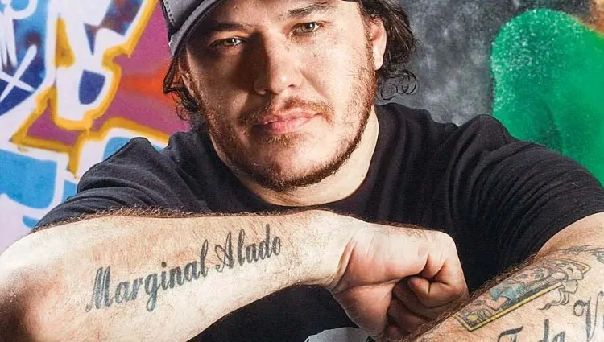

Alexandre Magno Abrão nasceu em 9 de abril de 1970, na cidade de São Paulo. Quando tinha 11 anos, seus pais se separaram. Na escola nunca foi muito bem, estudou até a sétima série em São Paulo. Posteriormente, continuou seus estudos em Santos e parou. Estudou sempre em escolas estaduais, envolvendo-se com os piores da turma, o que conduzia a problemas. Quando quis levar os estudos a sério, foi pra escola particular, mas seu pai não tinha condição de pagar.
Por volta dos 21 anos, Alexandre esteve em um bar de Santos chamado Creperie, bêbado. Tinha se separado da sua namorada com quem era casado e assistia ao show de uma banda chamada Matrix. O vocalista saiu para beber água e Alexandre subiu ao palco. Teria dito: “Aí, agora é comigo!". Com o microfone, Chorão cantou improvisadamente uma letra do Suicidal Tendencies. Apesar de estar embriagado, foi convidado por frequentador do bar para realizar uma audição no dia seguinte. O teste foi marcado para as 14 horas, mas Alexandre chegou às 11. Deram-lhe a letra, em inglês, o que soou difícil para Chorão por seu inglês ser então limitado a nomes de manobras de skate e um pouco do que via no cinema. A música e banda chamavam-se What's Up. Com o auxílio de um dos integrantes para aprender a música, Alexandre realizou o teste aos berros, e quando saiu, teria ouvido o guitarrista dizer: “Melhor [do que ele] a gente não vai arrumar mesmo”. Dois dias depois, gravariam para uma coletânea da rádio 95, de Santos. A banda já tinha mandado uma fita com a canção e sido selecionada, mas no meio tempo houvera uma briga que culminou na saída do vocalista que precedeu Chorão. Nenhum membro da banda se manifestou sobre a coletânea a Alexandre. Quando foi ao estúdio, tinha no máximo três dias como músico. Muito rouco, depois do teste, foi-lhe dito: "Pô, legal a tua voz não acaba!". Chorão teria periddo a voz por dois dias.Foi gravar sem voz alguma, mas com êxito e recebeu elogios dos técnicos do estúdio:"Esse cara é muito engraçado, canta pulando, esse moleque tem mó personalidade, não sabe cantar nada, mas vai longe”. Entretanto, o disco do What's Up nunca foi lançado por motivo é desconhecido. Quando o baixista da What's Up deixou a banda, Chorão veio a conhecer Champignon, novo baixista que passou a integrar a formação, na altura com 12 anos e que, mais tarde, viria a ser membro do Charlie Brown Jr..
